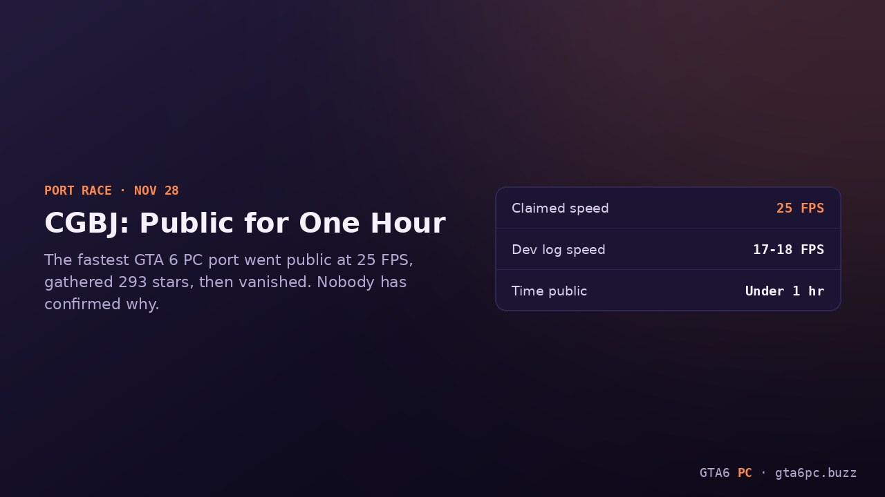

CGBJ went public at 25 fps, gathered 293 stars, then vanished within the hour
For about an hour on November 26, 2026, the most advanced unofficial GTA 6 PC port was out in the open. CGBJ, a private build that PortWatch rated 91.5 percent complete, went public on GitHub with a Windows launcher, gathered 293 stars and 82 forks, then started returning a 404. Nobody has confirmed whether Take-Two took it down or the team pulled it themselves. The code spread before the page went dark, and the frame rate claim behind the story does not match the project's own paperwork.

Four hours, three reports, one public release
The timeline comes from PortWatch VI, the tracker site that scores each fan port. In four hours on November 26, it posted three reports about the private CGBJ build: first 25 FPS in the game world, just under 30 in interiors and cutscenes, then a revision to a stable 20, then 25 again with a public release of the code.
The repository went live at 06:35 UTC with a Windows launcher and runtime under GPL-3.0. The tracker logged it answering at 07:34 UTC, then failing at 08:01 and 08:03 UTC. By 15:00 UTC, PortWatch had moved CGBJ back to its private list. It had gathered 293 stars and 82 forks, and several forks are still active, so the code spread before the page went dark.
That is the whole public life of the fastest port in the race: about an hour of availability, and a day of argument about what it really was. The speed of the disappearance is part of the story. The other part is that the numbers behind it do not agree with each other.
25 FPS in the reports, 17 to 18 in the logs
The headline number and the project's own paperwork tell different stories. PortWatch relayed a 25 FPS gameplay average on an Nvidia system with 16 GB of video memory, but it gives no GPU model, test scene or run length, and it does not tie that measurement to the public release. Other reports put the figure at 25 to 30 FPS.
CGBJ's own dev log tells a slower story: median frame times of 54 to 58 milliseconds on a GeForce RTX 5090 in the opening street scene, or 17.2 to 18.5 FPS, in short automated runs of about two minutes, with no real play recorded. PortWatch rated the build 91.5 percent complete, with the story campaign around 80 percent complete. Even at 17 to 18 FPS, the progress is remarkable: a day earlier, Belobug had reached only 5 to 7 FPS in its own README measurements. Fan ports went from 5 FPS to a claimed 25 FPS in a day, and the gap between the claim and the log is the difference between a tracker's report and a measurement.
The same caution applies to the score. The 91.5 percent is PortWatch's own scoring, built from the project's README, commits and stream footage. A second tracker, GTA6 Recomp, scored the same project lower on its own scale. Scores are a tracker's opinion, not a benchmark, and they move daily: by November 28, with Belobug removed and the board reshuffled, the private CGBJ build sat at 89.6 percent on PortWatch, behind VIctory-NVIDIA at 90.0 percent. Our FPS explainer covers why different trackers give different numbers for the same build.
Takedown or self-removal?
Nobody has confirmed a takedown. As of 00:21 UTC on November 27, GitHub had published no notice naming the repository, and notices usually take days to become public. The speed of the removal has fuelled suspicion of round-the-clock monitoring by Take-Two and Rockstar's lawyers, but suspicion is not proof.
The other explanation is that the team made the project private themselves to avoid a takedown, or took it down temporarily after distributing a benchmark build. A missing repository does not necessarily mean a takedown took place, and the group has said nothing in public. TweakTown reports that Take-Two shut CGBJ down, but gives no mechanism and no notice to check it against, so that claim stays unconfirmed too.
The timing is hard to ignore, though. Earlier in the week, Take-Two used a DMCA notice to remove the Leonida project and 3,007 associated repositories from GitHub. The next day, Belobug and its author account were removed for a Terms of Service violation, with no public notice either. Our Belobug report covers that removal, and our takedown tracker lists every project that has gone offline so far. CGBJ fits the pattern either way: every time a fan port gets close to playable, it disappears, and the race starts again.
The multiplayer link
CGBJ matters for a second reason: the first unofficial multiplayer footage came from its code. On November 26, TeK posted a video on X of multiplayer running on a private fork of CGBJ's build, with player characters, cars and proximity voice chat at 25 to 30 FPS, which PortWatch rates as real. Our multiplayer report covers that clip and what it does and does not prove.
The official game is single-player only, and its online mode has no release date. A two-player prototype at an airport is not GTA Online. But it arrived a week after launch, built on a fork of a fork, and it ran at console frame rates. That is why CGBJ's hour in public mattered more than the hour itself: the code it released is the code the multiplayer demo runs on, and that code is now in forks that Take-Two has not found.
What survives
The repository is gone, but the project is not. Several forks stayed active after the page went dark, and the code spread further in an hour than most projects manage in a week. Private groups keep working on it, which is also why so many of the claims now come with no public code to check. The same thing happened after Leonida: the public page vanished, the work continued in private, and the next public demo came from a fork nobody had seen before.
What a disappearance does kill is verification. While CGBJ was public, anyone could read its dev log and check the 17 to 18 FPS figure against the code. Once the repository is gone, the only record is what trackers and reporters saved before it vanished. That is why the 25 FPS claim can no longer be tested, and why the dev log's slower number is now the last measurement the project itself published.
CGBJ is a fork of VIctory, using a hybrid layer that combines VIctory's runtime with XCL's shader translation. Like every other port, it runs the leaked Xbox build of GTA 6, a 209 GB package that Cyberleek released on November 19 without its executable, then completed on November 23. The build is older than Rockstar's first patch, and it is not a PC version of the game. It is a week's worth of work by a private group, measured once, released once, and gone within the hour.
The bottom line
CGBJ went public, gathered 293 stars, and vanished before most players saw it. The code lives on in forks and mirrors, the frame rate is disputed, and the takedown is unconfirmed. The pattern is the one certainty: every time a fan port gets close to playable, it disappears, and the race starts again. The next public demo will come from a fork, and the next disappearance will follow it just as fast.
Quick answers
What happened to CGBJ?
Its GitHub repository went public on November 26, 2026 at 06:35 UTC, then started returning a 404 within the hour. By 15:00 UTC PortWatch had moved it back to its private list. No DMCA notice names the project, and the team has said nothing in public.
How fast did CGBJ run GTA 6 on PC?
Reports claimed 25 FPS on average, up to just under 30 in interiors and cutscenes. The project's own dev log records median frame times of 54 to 58 milliseconds on a GeForce RTX 5090 in the opening street scene, or 17.2 to 18.5 FPS, in short automated runs of about two minutes with no real play recorded.
Was CGBJ taken down by Take-Two?
Unconfirmed. TweakTown reports Take-Two shut the project down, but as of November 27 GitHub had published no DMCA notice naming the repository, and notices usually take days to become public. The team may also have made the project private themselves to avoid a takedown.
What is CGBJ built on?
CGBJ is a fork of VIctory, the open-source recompilation project, using a hybrid layer that combines VIctory's runtime with XCL's shader translation. Like every other port, it runs the leaked Xbox build of GTA 6, which Cyberleek released without its executable until November 23.
Can I still get the CGBJ build?
No safe way exists. The public repository is gone, and the code that survives lives in forks and mirrors that nobody has verified. Packages offered as a GTA 6 PC download have carried malware. We do not link to any of them.
Last updated . We update this page when Rockstar announces anything new.